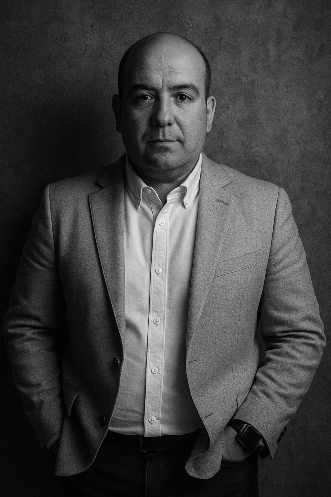

🏗️💻 De la Obra al Código
Mi Historia
Uniendo lo físico y lo digital

Jose Torres
Desde las obras de construcción hasta las líneas de código, he forjado una carrera única que une lo físico y lo digital. Mi experiencia de más de 10 años en construcción civil me ha enseñado la importancia de los cimientos, la planificación y la ejecución precisa, principios que ahora aplico en el desarrollo de software.
🎯 Visión de Terreno
Conozco de primera mano los dolores, cuellos de botella y pérdidas económicas reales en las faenas.
⚙️ Ingeniería Cloud
Desarrollo soluciones tecnológicas robustas, ágiles y enfocadas en la máxima eficiencia operativa.
¿Conectamos profesionalmente?
Conversemos sobre oportunidades de desarrollo, software para la construcción o consultoría tecnológica.
💬 Escríbeme Directo